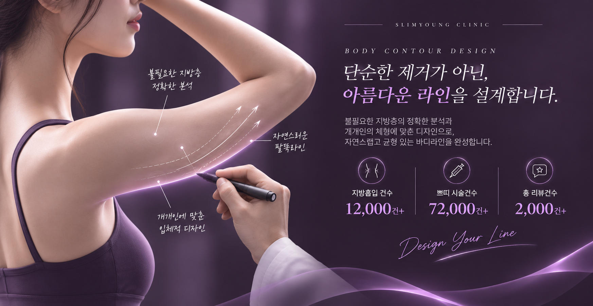

BODY CONTOUR DESIGN
단순한 제거가 아닌,
아름다운 라인을 설계합니다.
불필요한 지방층의 정확한 분석과
개개인의 체형에 맞춘 디자인으로,
자연스럽고 균형 있는 바디라인을 완성합니다.
- 지방흡입 건수
- 12,000건+
- 리프팅 시술건수
- 72,000건+
- 총 리뷰건수
- 2,000건+
불필요한 지방층
정확한 분석
자연스러운
팔뚝라인
개개인에 맞춘
입체적 디자인
SLIMYOUNG CLINIC
당신의 이야기를 듣고,
아름다움을 생각합니다.
섬세한 시선, 진솔한 설명.
나를 이해하는 곳에서 시작하는 변화.
01 / 02
모델 원본 3장 자료 대기 · 기존 배경 유지
PERSONAL. THOUGHTFUL. REFINED.SCROLL TO EXPLORE ↓
슬림영 실제 사진·유튜브를 활용한 디자인 샘플 · 문구는 제안용입니다
03 / REAL SELFIE REVIEW
나의 변화,
나의 이야기.
리얼 셀카 후기
View More · 후기 경로 확인 중실제 후기 사진은 사용 권한·공개 동의 확인 후 연결합니다. 현재 화면은 이미지 없는 레이아웃 슬롯입니다.

몸을 바라보는 시선,
사람을 생각하는 마음
아름다운 변화의 시작에는,
환자를 향한 깊은 이해와 진심,
그리고 신뢰를 소중히 여기는 마음이 있습니다.

말보다 더 분명한,
변화의 기록
슬림영의 전후사진으로 결과를 확인해보세요
05 / BEFORE & AFTER
변화를 보는,
또 하나의 시선.
Before & After
사례가 없는 카테고리는 빈 상태로 표시합니다. 실제 사례의 공개 동의와 사용 권한 확인이 먼저입니다.
THE ART OF CONSIDERATIONDESIGN STUDY / 01
추상 SVG 시안 · 실제 시술 장면 아님
추상 SVG 시안 · 실제 시술 장면 아님
06 / CONSIDERED DESIGN
덜어냄보다 먼저,
균형을 생각합니다.
하나의 선에도, 충분한 생각을.
개인의 체형과 원하는 방향을 함께 살피는
접근을 위한 디자인 제안입니다.
01
충분한 대화
기대하는 변화와 궁금한 점을 함께 나눕니다.
02
개인을 바라보는 시선
정형화된 수치 대신 개인에 맞는 설명을 담습니다.
의료진 검수 전 제안 문구. 실제 디자인 촬영 영상은 미확보 상태입니다.